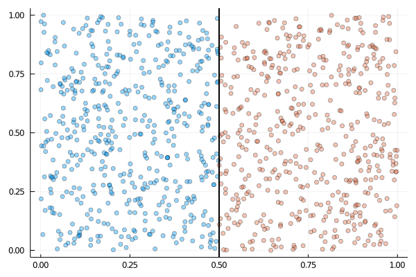
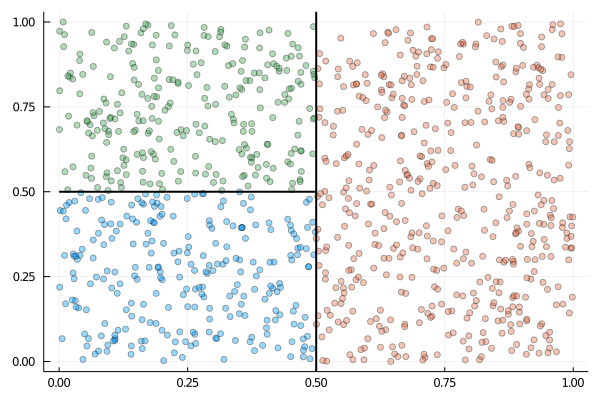

Recursive Partitioning
The RecursivePartition module allows the user to partition data into (hyper-)rectangular subsets across a bounded space. I will start with a simple motivating example which demonstrates the partitioning functionality of this module. Suppose that you have a dataset containing $1000$ pairs of coordinates which exist between $0$ and $1$ i.e. all of the points are positioned somewhere within the unit square. This information can be encoded using a matrix, where the $i$'th row details the upper/lower bounds of the $i$'th coordinate. Our square is therefore represented by the matrix
\[\begin{pmatrix} 0 & 1 \\ 0 & 1 \\ \end{pmatrix}.\]
One way to approach dividing up this space is to simply split the square in half and determine which side each of the points falls on. Assuming we are splitting in dimension $1$ (or the $x$-direction in terms of coordinates), this would look something like this:

We can now represent this as a vector of matrices, each matrix corresponding to a separate subregion.
\[P = \left[ \begin{pmatrix} 0 & 0.5 \\ 0 & 1 \end{pmatrix}, \begin{pmatrix} 0.5 & 0 \\ 0 & 1 \end{pmatrix} \right]\]
We can continue to recursively partition the resulting subsets into smaller rectangles e.g.

Partitions defined in this way can be constructed using RecursivePartition.insert_knot.
using RecursivePartition
X = rand(1000, 2)
P = [repeat([0.0 1.0], 2, 1)]
P = insert_knot(P, 1, 1, 0.5) # Split in dimension 1.
P = insert_knot(P, 1, 2, 0.5) # Split subregion 1 in dimension 2.
Xsubsets = partition(X, P) # Partition X according to P.The output Xsubsets is a vector of matrices; each matrix contains the rows of X pertaining to a particular subset. Although it is convenient to visualize this process in 2D, it is easily extended to higher dimensions.
Functions
RecursivePartition.insert_knot! — Methodinsert_knot!(P::Vector{Matrix{Float64}}, k::Int64, dim::Int64, loc::Float64)Do insert_knot by overwriting the original array (memory efficient).
RecursivePartition.insert_knot — Methodinsert_knot(P::Vector{Matrix{Float64}}, k::Int64, dim::Int64, loc::Float64)Bisect the k'th subset along dimension dim.
This function returns a modified version of P, where the k'th subset is replaced by the two matrices outputted by splitmat.
See also: splitmat, insert_knot!
Examples
P = [repeat([-1.0 1.0], 2, 1)]
P1 = insert_knot(P, 1, 1, 0.0)
# output
2-element Array{Array{Float64,2},1}:
[-1.0 0.0; -1.0 1.0]
[0.0 1.0; -1.0 1.0]RecursivePartition.partition — Methodpartition(X, P, [, y]; track=false)Partition a data matrix X (and optional vector y) into subsets according to a partition P.
See also: which_subset
Examples
P = [repeat([-1.0 1.0], 2, 1)]
P = insert_knot!(P, 1, 1, 0.0)
X = [-0.5 0.0; 0.5 0.0]
y = [1.0, 2.0]
partition(X, P, y; track=true)
# output
([[-0.5 0.0], [0.5 0.0]], [[1.0], [2.0]], [[1], [2]])RecursivePartition.splitmat — Methodsplitmat(mat::Matrix{Float64}, dim::Int64, loc::Float64)Return two new matrices that result from splitting row dim at loc.
mat must have exactly two columns, with column two being strictly greater than column 1. loc must be contained by the row to be split.
RecursivePartition.which_subset — Methodwhich_subset(x::Vector{Float64}, P::Vector{Matrix{Float64}})Determine which subset a vector x is contained by. This function assumes that your partition P is disjoint and comprises the entire space under union.
Examples
P = [repeat([-1.0 1.0], 2, 1)]
insert_knot!(P, 1, 1, 0.0) # Create two daughter subsets by dividing dim 1.
x = [-0.5, 0.0] # Dim 1 is les than 0.
which_subset(x, P)
# output
1